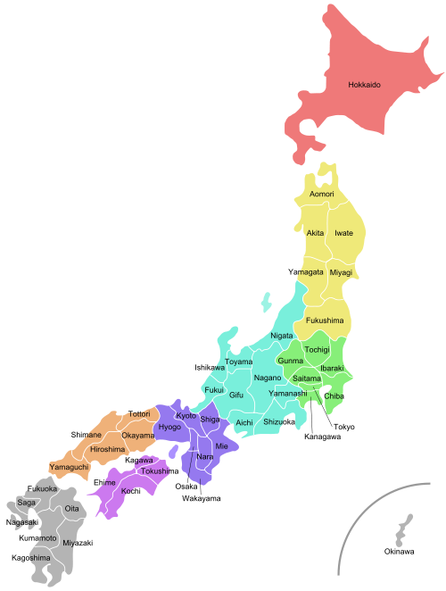
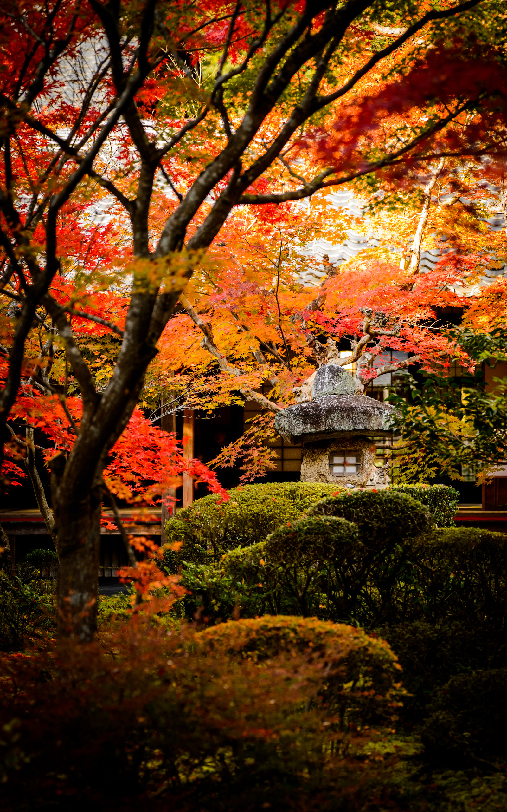

|  |
こんにちはWELCOME TO JAPAN!This website will take you on a virtual tour to the country of Japan. Here you will find out then country's history, culture, and more about the sovereign country in East Asia known as "The Land of the Rising Sun". |
 |
|---|
| History | Geograpy | Culture | Architecture |
|---|---|---|---|
|
The first human habitation in the Japanese archipelago has been traced to prehistoric times. The Jōmon period, named after its "cord-marked" pottery, was followed by the Yayoi in the first millennium BC, when new technologies were introduced from continental Asia. Japan first appears in written history in the Chinese Book of Han. According to the Records of the Three Kingdoms, the most powerful kingdom on the archipelago during the third century was called Yamataikoku. Buddhism was introduced to Japan from Baekje, Korea and was promoted by Prince Shōtoku, but the subsequent development of Japanese Buddhism was primarily influenced by China. |
Japan has a total of 6,852 islands extending along the Pacific coast of East Asia. The main islands, from north to south, are Hokkaido, Honshu, Shikoku and Kyushu. The Ryukyu Islands, which include Okinawa, are a chain to the south of Kyushu. The Nanpō Islands are south of the main islands of Japan. Together they are often known as the Japanese archipelago. The climate of Japan is predominantly temperate, but varies greatly from north to south. Japan's geographical features divide it into six principal climatic zones: Hokkaido, Sea of Japan, Central Highland, Seto Inland Sea, Pacific Ocean, and Ryukyu Islands. The northernmost zone, Hokkaido, has a humid continental climate with long, cold winters and very warm to cool summers. Precipitation is not heavy, but the islands usually develop deep snowbanks in the winter. |
Japanese culture has evolved greatly from its origins. Contemporary culture combines influences from Asia, Europe and North America. Traditional Japanese arts include crafts such as ceramics, textiles, lacquerware, swords and dolls; performances of bunraku, kabuki, noh, dance, and rakugo; and other practices, the tea ceremony, ikebana, martial arts, calligraphy, origami, onsen, Geisha and games. Japan has a developed system for the protection and promotion of both tangible and intangible Cultural Properties and National Treasures. Besides Japanese, the Ryukyuan languages (Amami, Kunigami, Okinawan, Miyako, Yaeyama, Yonaguni), also part of the Japonic language family, are spoken in the Ryukyu Islands chain. Few children learn these languages, but in recent years the local governments have sought to increase awareness of the traditional languages. |
Japanese architecture is a combination between local and other influences. It has traditionally been typified by wooden structures, elevated slightly off the ground, with tiled or thatched roofs. Sliding doors (fusuma) were used in place of walls, allowing the internal configuration of a space to be customized for different occasions. People usually sat on cushions or otherwise on the floor, traditionally; chairs and high tables were not widely used until the 20th century. Since the 19th century, however, Japan has incorporated much of Western, modern, and post-modern architecture into construction and design, and is today a leader in cutting-edge architectural design and technology. |